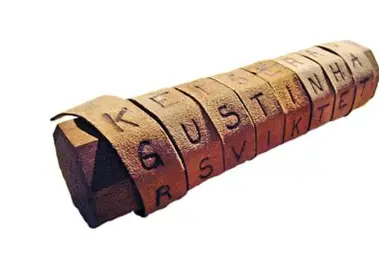
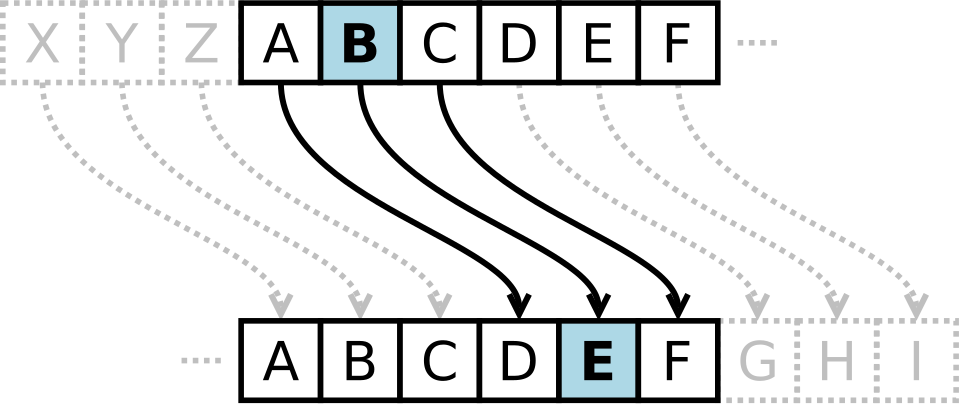
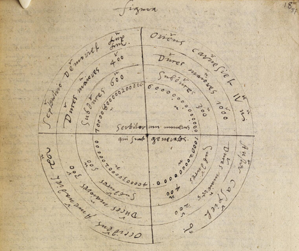

고대 암호학
스키테일 (Scytale)

기원전 450년 경 그리스인들이 고안해 낸 사실상 가장 오래된 암호이다. 전쟁터에 나가있는 군대에 비밀메시지를 전할 때 암호를 사용했다. 평범한 일정한 너비의 종이테이프를 원통(막대)에 서로 겹치지 않도록 감아, 테이프 위에 세로쓰기로 통신문을 기입하는 방식이며, 테이프를 풀어 보아서는 내용을 전혀 판독할 수 없으나, 통신문을 기록할 때 사용한 것과 생김새가 같고 동일한 지름을 가진 원통에 감아보면 내용을 읽을 수 있게 고안되었다.
카이사르 암호 (Caesar)

암호학에서 다루는 간단한 치환암호의 일종이다. 기원전 100년경에 만들어졌다. 카이사르 암호는 암호화하고자 하는 내용을 알파벳별로 일정한 거리만큼 밀어서 다른 알파벳으로 치환하는 방식이다. 카이사르 암호는 단순하고 간단하여 일반인도 쉽게 사용할 수 있지만, 철자의 빈도와 자주 사용되는 단어와 형태를 이용하면 쉽게 풀 수 있다는 단점이 있다.
스테가노그래피

기원전 440년 경부터 사용됬다. 숨겨진 정보의 존재가 의심하지 않는 사람의 검사에는 드러나지 않도록 다른 메시지나 물리적 개체 내에 정보를 나타내는 기술이다. 노예의 머리에 문신을 새기거나 밀랍 판 아래에 글을 쓰는 등의 기법이 활용됬다.